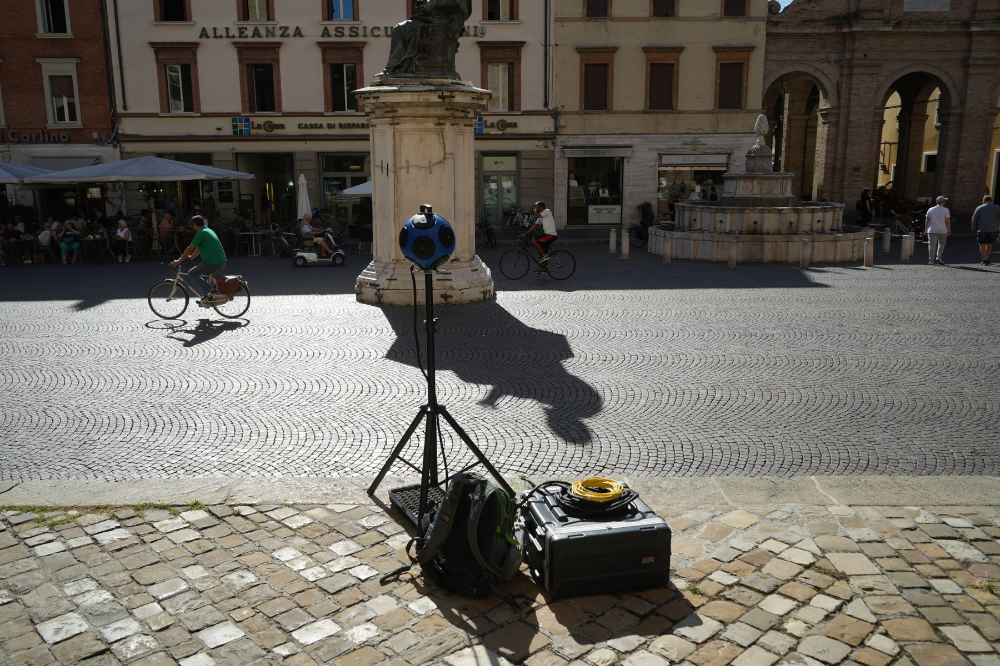

Laboratorio Virtuale
Timeline
Gallery
Partner
Pubblicazioni
Crediti
Audio Attivo
Rilascia per aprire
Laboratorio Virtuale
Fase 1: Registrazione del Suono e delle Piazze
Laboratorio ESS
x(t) · Sweep 80 Hz → 8 kHz
▶ Riproduci ESS
↺ Filtro Inverso
✦ Convolvi → δ(t)
Premi un controllo per ascoltare lo sweep o calcolare la convoluzione reale.
Fase Precedente
Fase Successiva

Schermo intero
Esplora modello 3D
Gallery
Gallery del Progetto
Foto 1 di 19
Archivio Sperimentale
Titolo
Descrizione
Modello 3D Interattivo
Sala Immersiva WFS — Tresigallo
Apri su e-muse.it ↗
Caricamento modello 3D…
Laboratorio
Timeline
Gallery
Partner
Pubblicazioni
Crediti